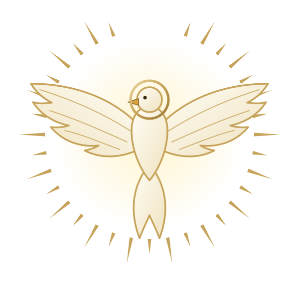
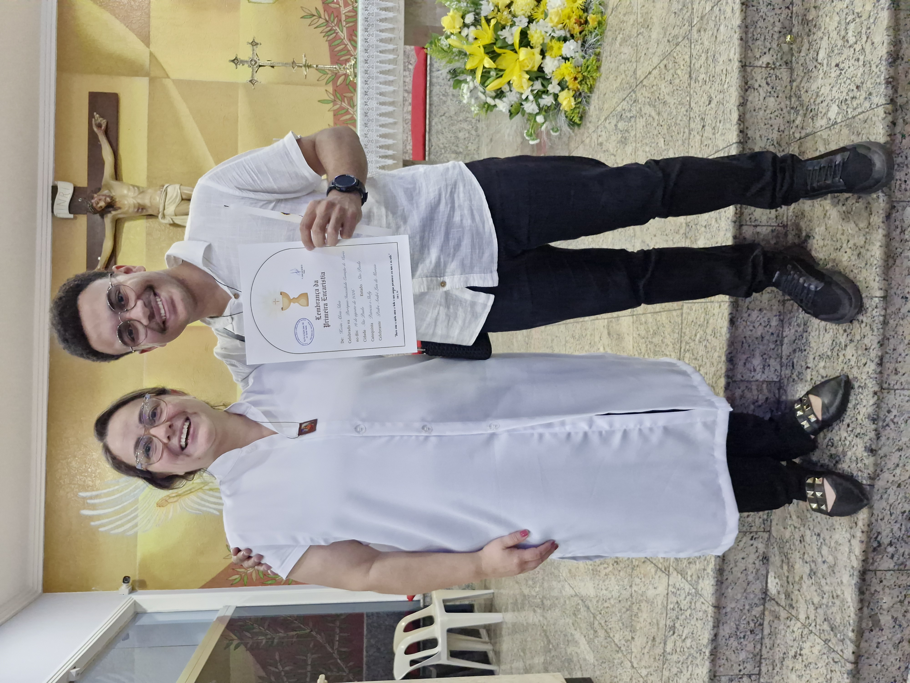

Uma história de encontro
A fé que recebi,
a vida que escolhi viver.
Eu era batizado, mas nunca quis seguir a fé católica. Acreditava em um só Deus, sem oração e sem comunidade. Neste ano comecei a catequese/crisma e, antes da primeira aula, pedi a Deus que me mostrasse onde eu deveria estar. A resposta que percebi foi: na Igreja. Esta página conta o que vivi desde então: a acolhida dos catequistas, o encontro de jovens, as mudanças e o que ainda quero mudar.
Prólogo
Antes de ser resposta, minha fé foi um chamado silencioso para olhar mais alto.
Minha história com Deus não começou em um grande acontecimento. Ela foi sendo escrita na simplicidade: nas orações aprendidas em família, no silêncio de uma igreja, no testemunho de quem permaneceu fiel mesmo nas dificuldades.
Aos poucos, compreendi que a fé católica é um caminho inteiro. Nela encontro a Palavra, os sacramentos, a comunidade e a certeza de que nunca caminho sozinho.

Meu primeiro marco
Catequese/Crisma
Conheci estes catequistas que são pessoas maravilhosas, me inspiram e nos passam ensinamentos sobre a fé católica, se aprofundando em tudo que possamos entender mais profundamente.
Patrícia · Igor · Letícia · Rafael · Pedro · Shelly · Rodolfo
“Eu sou o pão da vida.” — Jo 6,35
Corpo de Cristo
1° Eucaristia
Após a preparação na crisma, depois de muitos desafios e aprender a me confessar de maneira correta para deixar minha alma lima, eu pude comungar o corpo de Cristo pela primeira Vez.
“Isto é o meu corpo, que é dado por vós; fazei isto em memória de mim” — Lc 22,19
Meu primeiro marco
Meu início na Crisma
Conheci estes catequistas que são pessoas maravilhosas, me inspiram e nos passam ensinamentos sobre a fé católica, se aprofundando em tudo que possamos entender mais profundamente.
Patrícia · Igor · Letícia · Rafael · Pedro · Shelly · Rodolfo
“Eu sou o pão da vida.” — Jo 6,35